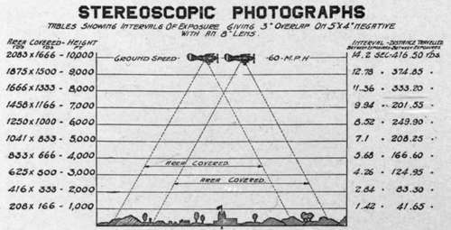
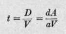
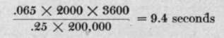
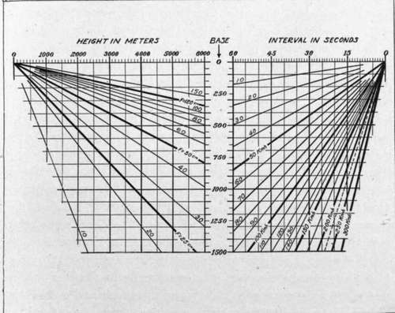

The Taking Of Aerial Stereograms
Description
This section is from the book "Airplane Photography", by Herbert E. Ives. Also available from Amazon: Airplane photography.
The Taking Of Aerial Stereograms
The normal separation of the eyes is altogether too small to give an appearance of relief to objects as far away as is the ground from a plane at ordinary flying heights. In order to secure stereoscopic pairs it is therefore necessary to resort to a method originally employed for photographing distant mountains and clouds. This is to take the two pictures from points separated by distances much greater than the inter-ocular separation—by meters instead of millimeters—corresponding to the positions of the eyes on a veritable giant. In the airplane this is accomplished by making successive exposures as the plane flies over the objective, at intervals to be determined by the speed, the altitude and the amount of relief desired (Fig. 155).
An all important question which arises immediately is: What separation of points of view shall we select? If the exposures are too close together there will be little relief; if too distant the relief will be so great as to be unnatural, even offensive. Obviously we cannot here establish a criterion of natural appearance, since the natural appearance to ordinary human eyes is devoid of relief. We may, however, define correct relief as that obtained when the apparent height of elevated objects is right as compared with their extension or plan.
Fig. 155. - Method of taking stereoscopic pictures.
In order to secure this condition it is necessary, first, that each element of the stereoscopic pair be correct in its perspective. This is fortunately an old photographic problem, already well understood. Its solution is to view the photograph from a distance exactly equal to the focal length of the camera lens. Since the normal viewing distance is not less than 25 centimeters, lenses of this focal length at least are requisite for correct perspective. Secondly, it is necessary for correct relief that the two views be taken with a separation equal, on the plane of the plate, to the separation of the eyes, or 65 millimeters. If d is the interocular distance, a the viewing distance, identical with the focal length of the* lens used, and A the altitude, then D, the distance between exposures, is given by the relation— d D a A
For a = 25 centimeters, jf^jg* approximately J^, or the interval between exposures must be a quarter the altitude. With a 50 centimeter lens this becomes and so on. These figures show the fallacy of the suggestion sometimes made that we take stereoscopic pictures by two cameras placed one at the extremity of each wing.
When lenses of more than 25 centimeters focal length are employed, the stereoscope should be one capable of throwing the convergence point farther away than the customary 25 centimeters. In the simple lens type of instrument we can do this by bringing the centers of the lenses closer together, and by making the focus agree with the convergence point by adjustment of the distance between lenses and stereogram. If enlargements are used they should be treated in all respects as originals made by lenses of the greater foci corresponding to the scale of the enlargement.
When all the conditions are covered, the appearance presented in the stereoscope is that of a model of the original object at a distance a, and ^ times natural size. If pictures are made at exposure intervals less than those indicated for correct relief, they show insufficient relief. This does not, however, give an unnatural effect, because anything between no relief and "correct" relief appears natural with large objects which are not ordinarily seen in relief by eyes not Brobdignagian. Conversely, stereograms made with too large exposure intervals show exaggerated relief. Yet this is often no objection. It is indeed rather an advantage if we wish to bring objects of interest to notice. Consequently, so long as the exaggeration of relief is not offensive, the permissible limits of exposure interval are pretty large. Actually, the eye tolerates such great deviations from strictly normal conditions that satisfactory stereoscopic effects are obtained for pictures viewed at very different distances from the focal length of the taking lens, and with the axes of the eyes parallel or even diverging, although there is some strain whenever focus and convergence points differ. On the whole, therefore, it may be said that the conditions above laid down for correct relief are only a normal, to be approximated as nearly as is practicable.
Having established the correct relation of taking points for stereos the next problem is how to determine these when in the plane. The simplest way is by means of a stereoscopic sight. This consists essentially of two lines of sight (fixed by beads, crosses, or other objects), inclined toward each other at the angle determined by the ratio of the ocular separation to the focal length of the lens. If the back sight is made a single bead or cross, the rest of the stereo sight will consist of two beads or crosses, separated from each other by the ocular distance of 65 millimeters, and distant from the back sight by the focal length of the lens (Fig. 157). The first picture is taken when the object is in line with the forward pointing line of sight, the second when it lies along the backward pointing one. Like other sights, the stereoscopic sight may be attached either to the camera, or if this is fixed in position, to any convenient part of the plane. A very simple sight for vertical stereoscopic photography consists of an inverted V painted on the side of the fuselage, so that the eye can be placed at the vertex and sighted along either leg.
The common method of determining the space between exposures is by the time interval. If V is the speed of the plane, and t the desired time interval, we have, from the last equation— .
If A = 2000 meters, d = 65 millimeters, and a = 25 centimeters, and if the plane is traveling 200 kilometers per hour, the time interval must be  .
At 1000 meters altitude the interval will be half this, and so on in proportion. If the pictures are taken with a 50 centimeter focus camera, and are hence to be viewed at 50 centimeters convergence distance instead of at 25, the time will again be halved. These relations are clearly shown in the diagram (Fig. 156). Here the left-hand portion shows how to find the stereoscopic base line at each altitude for each focal length; while the right-hand portion shows how to translate this into time interval for any plane velocity. The Burchall slide rule (Fig. 130) shows another way to arrange these data in form for rapid calculation.
Fig. 156. - Chart for calculating intervals between exposures for stereoscopic pictures.
Plates used for stereoscopic negatives should be at least twice as long as the ocular separation, if correct relief is desired, and the full size of the stereoscope field is to be utilized. This relation follows at once if we consider that we wish to cut from each negative a rectangle 65 millimeters wide, and that the image of the target has shifted 65 millimeters between exposures. If the plate is larger than this there is opportunity to select the view, or to pick several. If the plate is smaller the elements of the stereogram must be narrow strips. This, however, holds only for contact prints.
The ordinary English practice in making stereo negatives is to take successive pictures with an overlap of 60 to 75 per cent. This practice is probably dictated by the 4X5 inch plate, since 60 per cent, overlap on 4 inches means a separation of just over an inch and a half instead of 2%, but it leaves 2^ inches of picture common to the two negatives. With ^ overlap the common portion is 3 inches, which permits of cutting 2^ inch prints, and allows some latitude for irregular motion of the plane or for chance error in calculation of intervals. Data on the basis of % overlaps for a 4-inch plate are shown in connection with Fig. 155 which shows in diagrammatic form the variation of exposure interval with height, together with other points of interest.
Continue to:
Tags
camera, lens, airplane, aerial, film, exposure, photography, maps, birdseye